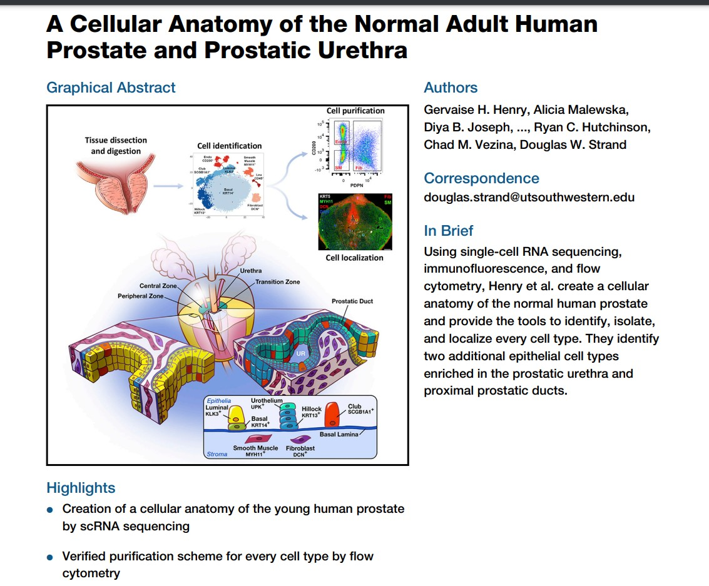
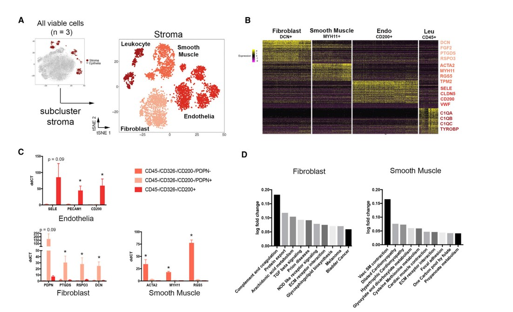

S6 HCA, ontologies, shiny
Vincent J. Carey, stvjc at channing.harvard.edu
May 07, 2026
Source:vignettes/S6_hca_onto.Rmd
S6_hca_onto.RmdA paper on the atlas of the prostate

overview

normals
The CuratedAtlasQueryR package
CuratedAtlasQueryR offers a maintained interface to harmonized single-cell atlas metadata and count data. Instead of browsing HCA projects and then downloading loom files, we can query the atlas directly by tissue, assay, annotation, and other harmonized variables.
Surveying the curated atlas
caq_metadata = CuratedAtlasQueryR::get_metadata(
remote_url = CuratedAtlasQueryR::SAMPLE_DATABASE_URL
)
caq_summary = caq_metadata |>
dplyr::summarise(
datasets = dplyr::n_distinct(dataset_id),
files = dplyr::n_distinct(file_id),
tissues = dplyr::n_distinct(tissue),
cell_types = dplyr::n_distinct(cell_type)
) |>
dplyr::collect()
knitr::kable(caq_summary)| datasets | files | tissues | cell_types |
|---|---|---|---|
| 63 | 63 | 33 | 32 |
Looking at available tissue and cell-type combinations
caq_examples = caq_metadata |>
# sample_ is the upstream harmonized sample identifier, renamed here for display
dplyr::select(
dataset_id, tissue, cell_type, assay,
sample_id = sample_
) |>
dplyr::distinct() |>
dplyr::arrange(tissue, cell_type) |>
dplyr::collect()
caq_examples = head(caq_examples, 12)
knitr::kable(caq_examples)| dataset_id | tissue | cell_type | assay | sample_id |
|---|---|---|---|---|
| 76347874-8801-44bf-9aea-0da21c78c430 | adrenal gland | effector CD8-positive, alpha-beta T cell | 10x 3’ v3 | 321f32ab8436164a1f515b54a68d9751 |
| 76347874-8801-44bf-9aea-0da21c78c430 | axilla | effector CD8-positive, alpha-beta T cell | 10x 3’ v3 | 0922d899f004a4303b6593ddd5fb97bf |
| 59b69042-47c2-47fd-ad03-d21beb99818f | blood | CD16-negative, CD56-bright natural killer cell, human | 10x 3’ v3 | d611df00a2ea437cbb012da8c7c19f45 |
| 59b69042-47c2-47fd-ad03-d21beb99818f | blood | CD16-negative, CD56-bright natural killer cell, human | 10x 3’ v3 | 0b6f0388f516464e0bce9b8ffb002bae |
| 4c4cd77c-8fee-4836-9145-16562a8782fe | blood | CD16-negative, CD56-bright natural killer cell, human | 10x 3’ v3 | 03ba71b96d7b946f5748abf62894d327 |
| 4c4cd77c-8fee-4836-9145-16562a8782fe | blood | CD16-negative, CD56-bright natural killer cell, human | 10x 3’ v3 | 1ea45b6ba0258fbc5971c34a3985d3da |
| 5e717147-0f75-4de1-8bd2-6fda01b8d75f | blood | CD16-negative, CD56-bright natural killer cell, human | 10x 3’ v3 | d91e5c813881aa1f413b1f829a1613a5 |
| 5e717147-0f75-4de1-8bd2-6fda01b8d75f | blood | CD16-negative, CD56-bright natural killer cell, human | 10x 3’ v3 | 9eb56b334fd105879257b3b69c7cdba6 |
| 5e717147-0f75-4de1-8bd2-6fda01b8d75f | blood | CD16-negative, CD56-bright natural killer cell, human | 10x 3’ v3 | 5a129f42baa0758bccab877b6e3ff60d |
| 5e717147-0f75-4de1-8bd2-6fda01b8d75f | blood | CD16-negative, CD56-bright natural killer cell, human | 10x 3’ v2 | 3c2678826f3a1e984657402038b9c976 |
| 4c4cd77c-8fee-4836-9145-16562a8782fe | blood | CD16-negative, CD56-bright natural killer cell, human | 10x 3’ v3 | 4d56f21c88c599460333fba42201cc94 |
| 5e717147-0f75-4de1-8bd2-6fda01b8d75f | blood | CD16-negative, CD56-bright natural killer cell, human | 10x 3’ v3 | 1ff8a479ad1da47748de60c84a2428cf |
Retrieving a SingleCellExperiment
CuratedAtlasQueryR can return a SingleCellExperiment directly, so the intermediate loom import step is unnecessary.
Very superficial filtering (to 60000 cells) and development of PCA
library(scater)
library(scuttle)
sf1 = caq_metadata |>
dplyr::filter(
# Match 10x Genomics Chromium assays in the harmonized metadata
stringr::str_like(stringr::str_to_lower(assay), "%10x%"),
tissue == "lung parenchyma",
stringr::str_like(cell_type, "%CD4%")
) |>
CuratedAtlasQueryR::get_single_cell_experiment()
sf1
names(colData(sf1))
assay(sf1[1:4,1:4])
max_cells = 60000
sce_subset = sf1[,1:min(max_cells, ncol(sf1))]
z = DelayedArray::rowSums(assay(sce_subset))
mean(z==0)
todrop = which(z==0)
litsf2 = sce_subset[-todrop,]
assay(litsf2)
litsf2 = logNormCounts(litsf2)
litsf2 = runPCA(litsf2)Once litsf2 is available, the downstream exploration is unchanged.
Ontologies, EBI OLS, rols (thanks Laurent Gatto!), ontoProc::ctmarks
Definition: from Wikipedia
In computer science and information science, an ontology encompasses a representation, formal naming, and definition of the categories, properties, and relations between the concepts, data, and entities that substantiate one, many, or all domains of discourse. More simply, an ontology is a way of showing the properties of a subject area and how they are related, by defining a set of concepts and categories that represent the subject.
Every academic discipline or field creates ontologies to limit complexity and organize data into information and knowledge. Each uses ontological assumptions to frame explicit theories, research and applications. New ontologies may improve problem solving within that domain. Translating research papers within every field is a problem made easier when experts from different countries maintain a controlled vocabulary of jargon between each of their languages.
Applications in genomics
- Gene Ontology: Genes and gene products in subdomains of BP, MF, CC – biological process, molecular function, cellular component
- Human Phenotype Ontology
- UBERON - cross-species anatomy
- Cell ontology
- Cell line ontology
- EFO - experimental factor ontology
Tags from any of these can be encountered in various annotation resources.
rols: Basic idea
- OLS is ontology lookup service
- has API
- rols package help to interrogate the service
- ontologies are everywhere
Learn about ‘smooth muscle’ with rols
## Object of class 'OlsSearch':
## query: smooth muscle
## requested: 100 (out of 59450)
## response(s): 0| iri | ontology_name | ontology_prefix | short_form | description | label | obo_id | type | exact_synonyms | related_synonyms | narrow_synonyms | broad_synonyms |
|---|---|---|---|---|---|---|---|---|---|---|---|
| http://purl.obolibrary.org/obo/BTO_0001260 | bto | BTO | BTO_0001260 | Muscle t…. | smooth muscle | BTO:0001260 | class | ||||
| http://www.ebi.ac.uk/efo/EFO_0000889 | efo | EFO | EFO_0000889 | Muscle t…. | smooth muscle | EFO:0000889 | class | adult vi…. | |||
| http://purl.obolibrary.org/obo/WBbt_0005781 | wbbt | WBbt | WBbt_0005781 | smooth muscle | WBbt:0005781 | class | |||||
| http://purl.obolibrary.org/obo/XAO_0000175 | xao | XAO | XAO_0000175 | Involunt…. | smooth muscle | XAO:0000175 | class | visceral…. | |||
| http://purl.obolibrary.org/obo/ZFA_0005274 | zfa | ZFA | ZFA_0005274 | A non-st…. | smooth muscle | ZFA:0005274 | class | ||||
| http://purl.obolibrary.org/obo/TAO_0005274 | tao | NA | TAO_0005274 | A non-st…. | smooth muscle | TAO:0005274 | class | ||||
| http://purl.obolibrary.org/obo/WBbt_0005781 | wbphenotype | WBPhenotype | WBbt_0005781 | smooth muscle | WBbt:0005781 | class | |||||
| http://purl.obolibrary.org/obo/XAO_0000175 | xpo | XPO | XAO_0000175 | Involunt…. | smooth muscle | XAO:0000175 | class | visceral…. | |||
| http://purl.obolibrary.org/obo/ZFA_0005274 | zfs | ZFS | ZFA_0005274 | A non-st…. | smooth muscle | ZFA:0005274 | class | ||||
| http://purl.obolibrary.org/obo/ZFA_0005274 | zp | ZP | ZFA_0005274 | smooth muscle | ZFA:0005274 | class | |||||
| http://purl.obolibrary.org/obo/NCIT_C12437 | ncit | NCIT | NCIT_C12437 | Involunt…. | Smooth Muscle Tissue | NCIT:C12437 | class | MUSCLE, …. | |||
| http://id.nlm.nih.gov/mesh/D009130 | mesh | mesh | mesh_D009130 | Unstriat…. | Muscle, Smooth | mesh:D009130 | class | Involunt…. |
ontoProc – capitalizing on ontologyIndex (thanks Daniel Greene!), Rgraphviz (thanks Kasper Hansen!)
## loading from cache
head(co$name)## BFO:0000002 BFO:0000003 BFO:0000004
## "continuant" "occurrent" "independent continuant"
## BFO:0000006 BFO:0000015 BFO:0000016
## "spatial region" "process" "disposition"The ctmarks app: walk through linked ontologies such as PR and present additional facets about the concept in focus
Limitation: the OBO representation in use is outdated and out-links are sparse
chk = ctmarks(co)Projects: - use rols to get more interesting information about terms into the app - update the ontology resources - go beyond OBO … but not all the way to OWL? Evaluate the UI/UX needed to broaden ontology usage - impacts: data integration, precision of annotation, cognitive efficiency